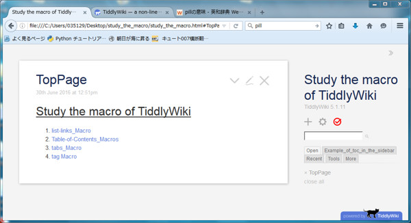
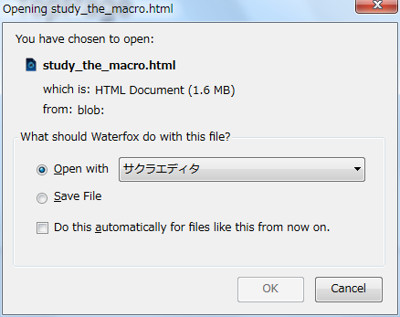
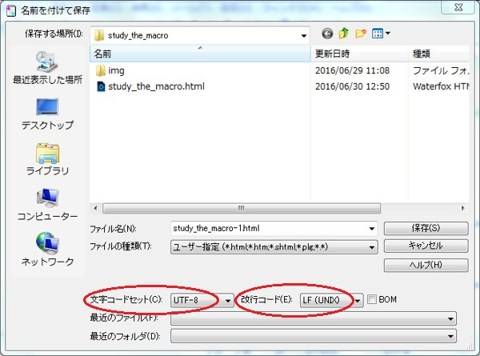

3rd January 2023 at 1:36pm
Tiddlerの編集後の保存方法は、以下のやり方を好んで使います。
必要なアプリケーションは、「Gecko系のブラウザ」と「テキスト編集ソフト」です。
以下の説明では、Gecko系のブラウザは「Waterfox」、テキスト編集ソフトは「サクラエディタ」とします。
最近では「Google Chrome」がメインブラウザになりました。あまりhtmlを直接編集することがなくなったからです。
まず、TiddlyWikiのファイルをGecko系のブラウザで開きます。編集後、クリックします。
 図1
Gecko系のブラウザの場合、以下のような画面が開きますので、Open withを選択し、アプリケーションに「サクラエディタ」を選択します。
 図2
「サクラエディタ」が起動しますので、所望のファイル名で保存しましょう。
保存の際に重要なのは、文字コードセットを「UTF-8」、改行コードを「LF (UNIX)」にすることです（図3）。
 図3
このやり方の良いところは、図2の段階で直接htmlファイルを編集することができるところです。直接ファイルをいじったチューニングが可能となります。